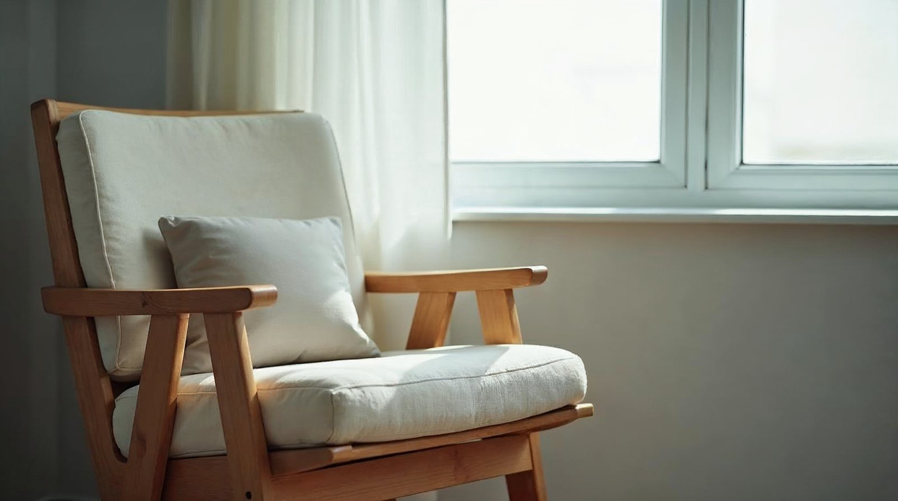
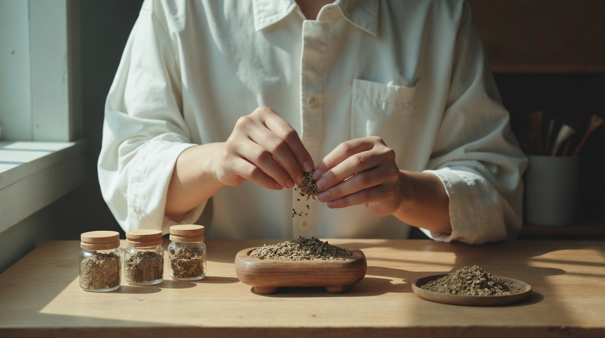
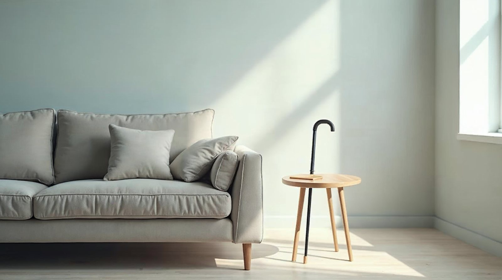

이종호 한의사 감수좋은꿈참사랑한의원 대표원장 (한의사 면허번호 19769)발행 2026-11-23 · 수정 2026-11-26
이 글의 차례
- 왜 이런 불편이 생길 수 있나요
- 가족이 집에서 볼 수 있는 것
- 자주 하는 오해
- 예를 들면 이런 경우입니다
- 먼저 이렇게 여쭙니다
- 일상에서 먼저 해 볼 수 있는 것
- 가족이 함께 점검해 보세요
- 한의원에서 함께 살필 수 있는 경우
- 이렇게 기록해 오시면 상담이 쉬워집니다
- 며칠 지켜보고, 언제 바로 확인하나요
- 일어서는 동작을 다섯 단계로 나눠 보면 어디가 막히는지 보입니다
- 가족이 도와드릴 때 이렇게 해 주세요
- 왜 감기나 입원 뒤에 갑자기 더 어려워질까요
- 의자와 집 안 자리를 이렇게 바꿔 보세요
- 식사와 물, 낮 활동은 이렇게 챙겨 드리세요
- 진료 날 가족이 준비하면 좋은 것
- 어르신 마음도 함께 살펴 주세요
- 진료는 어떤 흐름으로 이어지나요?
- 이럴 때는 기록을 들고 진료를 받아 보세요
- 이런 증상은 먼저 확인이 필요합니다
- 함께 읽으면 좋은 글
"요즘 일어나실 때 시간이 걸리세요"라는 가족의 말씀은 중요한 정보입니다. 어르신 본인은 익숙해져 잘 말하지 않는 경우가 많아, 가족이 본 변화를 함께 들으면 어디서부터 살필지 정하기가 쉬워집니다.
왜 이런 불편이 생길 수 있나요
- 허벅지와 엉덩이 근육이 약해지면 앉은 자리에서 몸을 밀어 올리는 힘이 부족해집니다.
- 무릎이나 엉덩이 관절이 아프면 일어서는 순간을 망설이게 됩니다.
- 일어설 때 혈압이 잠깐 떨어지면 어지러워 다시 앉게 되기도 합니다.
- 낮은 소파나 푹 꺼지는 의자는 같은 힘으로도 일어서기 더 어렵게 만듭니다.
가족이 집에서 볼 수 있는 것
- 일어설 때 팔걸이나 무릎을 손으로 짚어야만 일어나시는지
- 한 번에 일어나지 못하고 몸을 몇 번 앞뒤로 흔든 뒤 일어나시는지
- 일어선 뒤 바로 걷지 못하고 잠시 멈춰 서 계시는지
- 걸음이 예전보다 좁아지고 발을 끄시는지
- 앉을 때 털썩 주저앉듯 앉으시는지
이런 모습이 언제부터, 하루 중 언제 더 두드러지는지 적어 두시면 진료 때 도움이 됩니다.

자주 하는 오해
- 연세가 드셨으니 일어서기 힘든 것은 어쩔 수 없다고 여기기 쉽지만, 의자 높이와 일어서는 요령, 다리 힘을 점검하면 생활에서 도울 수 있는 부분이 있습니다.
- 넘어질까 봐 최대한 앉아 계시게 하는 것이 안전하다고 생각하기 쉽지만, 오래 앉아만 계시면 다리 힘이 더 줄어 일어서기가 더 어려워질 수 있습니다.
- 가족이 팔을 잡아당겨 일으켜 드리면 된다고 여기기 쉽지만, 팔을 세게 당기면 어깨에 무리가 갈 수 있어 허리 쪽을 받쳐 드리는 편이 안전합니다.
- 어르신이 괜찮다고 하시면 문제가 없다고 생각하기 쉽지만, 불편을 잘 말씀하지 않으시는 경우가 많아 가족이 본 모습이 중요한 단서가 됩니다.
예를 들면 이런 경우입니다
- 예를 들어 감기를 앓고 일주일쯤 누워 지내신 뒤부터 일어서기를 힘들어하시는 경우라면, 식사와 수분이 회복되었는지 먼저 살피고 다리 힘을 천천히 되찾는 방법을 함께 정합니다.
- 예를 들어 새로 혈압약을 드시기 시작한 뒤 일어설 때 어지럽다고 하시는 경우라면, 약을 임의로 줄이지 말고 처방한 병원에 먼저 알리시도록 안내드립니다.
- 예를 들어 낮은 거실 소파에서만 유독 일어나기 어려워하시는 경우라면, 앉는 자리의 높이와 팔걸이부터 바꿔 보고 그래도 어려운지 살핍니다.
- 예를 들어 화장실 변기에서 일어나기를 특히 힘들어하시는 경우라면, 손잡이를 짚을 수 있는 자리와 변기 높이를 함께 살펴보고 집에서 바꿀 수 있는 것부터 정합니다.
먼저 이렇게 여쭙니다
- 일어서기 어려워진 지 얼마나 되었나요? 서서히인가요, 갑자기인가요?
- 일어서는 순간 어지럽거나 눈앞이 어두워지는 일이 있나요?
- 무릎이나 엉덩이, 허리 중 어디가 아프다고 하시나요?
- 최근에 복용하는 약이 바뀌었나요?
- 식사량이나 활동량이 줄지는 않았나요?
- 집에서 주로 앉으시는 의자나 소파는 어떤 높이인가요?
일상에서 먼저 해 볼 수 있는 것
- 팔걸이가 있고 높이가 적당한 단단한 의자 쓰기
- 일어서기 전에 발을 뒤로 당기고 손으로 팔걸이를 밀며 천천히 일어나기
- 일어선 직후 잠깐 멈춰 균형을 잡은 뒤 걷기 시작하기
- 하루 몇 번 의자에서 일어났다 앉기를 가볍게 반복하며 다리 힘 유지하기
- 낮은 소파에는 방석을 더해 앉는 높이 올리기
- 어르신이 자주 다니는 길에 걸려 넘어질 만한 물건과 전선 치워 두기
가족이 함께 점검해 보세요
- 일어설 때 손으로 짚지 않으면 일어나기 어려우시다
- 일어서는 데 예전보다 시간이 눈에 띄게 걸린다
- 일어선 직후 어지럽다고 하시거나 휘청거리신다
- 최근 몇 달 사이 넘어지셨거나 넘어질 뻔하셨다
- 식사량이 줄고 체중이 빠지셨다
- 최근 새로 드시기 시작한 약이 있다
- 외출이나 산책을 예전보다 꺼리신다
해당하는 항목이 있다면 진료 때 가족이 본 모습을 함께 말씀해 주세요.

한의원에서 함께 살필 수 있는 경우
- 일어설 때 무릎과 엉덩이가 아파 망설이게 되는 경우 아픈 동작과 생활 습관을 함께 살핍니다.
- 일어선 뒤 어지럽거나 휘청거리는 경우 식사와 수분, 복용 약과 생활 리듬을 함께 살핍니다.
- 전반적으로 기운이 떨어져 활동이 줄어든 경우 잠과 식사, 활동량을 함께 살핍니다.
좋은꿈참사랑한의원에서는 의자에서 일어서는 동작과 걷기 시작하는 모습을 직접 확인하고, 무릎과 엉덩이, 허리의 통증과 어지럼 여부를 함께 여쭙니다. 필요하다고 판단될 때 침이나 추나 등을 어르신 체력에 맞춰 정하고, 가족에게는 집에서 도울 방법을 알려 드립니다.
첫 방문에는 접수 때 보호자가 함께 기본 정보를 적어 주시면 됩니다. 진료실에서는 모든 분의 맥을 먼저 짚고, 맥을 짚으며 어르신께 불편한 곳과 시기를 여쭌 뒤 가족이 본 변화를 이어서 듣습니다. 걸어 들어오시느라 숨이 차셨다면 잠시 쉬신 뒤에 짚습니다.
복용 약 목록을 함께 확인하고, 무릎과 엉덩이, 허리의 움직임은 무리 없는 범위에서 봅니다.
오늘 할 치료와 이유를 먼저 설명드린 뒤 어르신 체력에 맞춰 진행하고, 귀가 전에는 다음 진료 때 살펴볼 점을 함께 정합니다.

이렇게 기록해 오시면 상담이 쉬워집니다
- 일어서기 어려워진 시기와 갑작스러운 변화가 있었는지
- 일어설 때 어지럽다고 하신 날과 시간대
- 복용 중인 약 목록(최근 바뀐 약 표시)
- 집에서 주로 앉으시는 의자나 소파의 높이와 팔걸이 여부
- 최근 몇 달 사이 넘어지셨거나 넘어질 뻔한 장소와 상황
며칠 지켜보고, 언제 바로 확인하나요
- 조금씩 느려지는 변화라면 2~4주 동안 일어서는 모습과 넘어질 뻔한 일을 적어 보며 지켜보고, 의자 높이와 팔걸이 같은 환경부터 바꿔 보세요.
- 몇 주 사이에 눈에 띄게 어려워졌거나 넘어질 뻔한 일이 반복된다면 진료를 받아 보세요.
일어서는 동작을 다섯 단계로 나눠 보면 어디가 막히는지 보입니다
의자에서 일어서는 일은 하나의 동작처럼 보이지만, 천천히 들여다보면 여러 단계로 나뉩니다. 어르신이 어느 단계에서 머뭇거리시는지 보시면 원인을 짐작하는 데 도움이 됩니다.
- 엉덩이를 의자 앞쪽으로 당겨 앉기: 이 단계부터 어렵다면 허리나 엉덩이 관절이 뻣뻣하거나 아픈 경우가 많습니다.
- 발을 무릎보다 뒤로 당기기: 발을 잘 당기지 못하시면 무릎이 덜 굽거나 발목이 굳어 있는지 봅니다.
- 상체를 앞으로 숙여 코가 무릎 위로 오게 하기: 숙이지 못하고 뒤로 기대신 채 일어나려 하시면 몸이 뒤로 쏠려 더 힘이 듭니다.
- 다리로 밀어 올리기: 엉덩이가 의자에서 떨어지는 순간 주저앉으신다면 허벅지와 엉덩이 근력이 부족한 경우가 많습니다.
- 선 뒤 균형 잡기: 일어난 뒤 휘청이시거나 아찔해하시면 균형이나 혈압 변화를 함께 살핍니다.
어르신이 괜찮다고 하시면 휴대폰으로 일어서는 모습을 옆에서 짧게 찍어 오셔도 좋습니다. 진료실에서 다시 해 보시기 어려운 날에도 함께 보며 이야기할 수 있습니다.
가족이 도와드릴 때 이렇게 해 주세요
- 정면보다 어르신 옆에 서서, 한 손은 허리나 바지 허리춤 쪽을 가볍게 받칩니다. 팔을 당기면 어르신이 스스로 다리를 쓰실 기회가 줄어듭니다.
- "하나, 둘, 셋" 하고 함께 박자를 맞추면 어르신이 힘을 낼 순간을 준비하기 쉽습니다.
- 재촉하지 않고, 스스로 하실 수 있는 부분은 끝까지 지켜봐 드립니다.
도움을 받는 일이 자존심 상한다고 느끼시는 어르신도 많습니다. "제가 옆에 있을게요" 정도로 곁을 지키는 말이 어르신의 긴장을 덜어 드립니다.
왜 감기나 입원 뒤에 갑자기 더 어려워질까요
어르신은 며칠만 누워 지내셔도 다리 근육이 줄어들기 쉽고, 줄어든 근력을 되찾는 데는 그보다 훨씬 긴 시간이 걸립니다. 감기나 장염으로 식사를 제대로 못 하시면 몸에 힘을 낼 재료도 함께 모자랍니다.
물을 적게 드시면 일어설 때 혈압이 쉽게 떨어져 아찔함이 더해지고, 한 번 휘청한 경험이 있으면 겁이 나 움직임을 더 줄이시기도 합니다. 이렇게 작은 변화가 이어지면서 몇 주 사이에 일어서기가 크게 힘들어지는 경우가 있습니다.
복지관 강연에서도 이 이야기를 드렸습니다. 한 달만 집에 가만히 있어도 점심 먹으러 나오기가 귀찮아지고, 땀 나는 것도 힘들어집니다. 그 마음이 들면 몸은 더 약해집니다.
그래서 아프고 난 뒤에는 식사와 물부터 챙겨 드리고, 몸이 허락하는 범위에서 하루 몇 번이라도 일어났다 앉기를 이어 가시도록 곁에서 도와드리는 것이 좋습니다. 입원하셨던 병원에서 받은 활동 안내가 있다면 그 안내를 먼저 따르세요.
의자와 집 안 자리를 이렇게 바꿔 보세요
- 집 안 모든 의자를 한꺼번에 바꾸기보다, 어르신이 가장 오래 앉으시는 자리부터 바꿉니다.
- 식탁 의자는 바퀴가 없고 무거워 밀리지 않는 것으로 고릅니다.
- 변기가 낮다면 높이를 올려 주는 보조 시트와 옆 손잡이를 함께 고려합니다.
- 침대는 걸터앉았을 때 발바닥 전체가 바닥에 닿는 높이가 좋습니다.
- 자주 앉으시는 자리 앞에는 미끄러운 깔개를 두지 않습니다.
식사와 물, 낮 활동은 이렇게 챙겨 드리세요
다리 힘은 운동만으로 지켜지지 않고 먹는 것과 함께 움직입니다. 입맛이 줄어드신 어르신은 밥 양보다 반찬 가운데 두부, 달걀, 생선처럼 부드러운 단백질 반찬을 매 끼 한 가지씩 챙겨 드리세요.
물은 목이 마르다고 느끼기 전에 드시도록 시간을 정해 두는 편이 좋습니다. 밤에 화장실 가시는 것이 걱정된다면 오전과 이른 오후에 나눠 드리세요.
신장이나 심장 질환, 당뇨로 먹는 것과 물의 양을 안내받으셨다면 치료받는 병원의 지침을 먼저 지켜 주세요.
낮잠은 짧게 하시고, 해가 드는 시간에 집 안이나 집 앞을 잠깐이라도 걸어 보세요. 밤잠과 다음 날 몸 상태를 살피는 데도 보탬이 될 수 있습니다.
진료 날 가족이 준비하면 좋은 것
- 무릎까지 걷어 올리기 편한 옷
- 드시는 약 봉투 전부(영양제 포함)
- 집에서 궁금했던 점을 적은 메모
저는 어르신께 드시는 약을 전부 가져와 달라고 말씀드리곤 합니다. 하루에 드시는 약이 한 움큼인 분도 계십니다. 약이 여러 가지일 때는 졸림이나 어지럼이 겹칠 수 있어, 일어서다 휘청이시는 이유를 찾는 단서가 되기도 합니다.
줄여도 되는 약이 있는지는 혼자 정하지 마시고, 처방한 의사나 약사에게 약을 모두 보여 드리고 상의하세요. 혈압약이나 당뇨약처럼 임의로 끊으면 위험한 약이 있습니다.
어르신 마음도 함께 살펴 주세요
일어서기가 힘들어지면 어르신은 가족에게 짐이 될까 걱정하시며 움직임을 줄이시기도 합니다. 바깥에 나가자는 말씀에 "괜찮다"고만 하신다면, 몸이 힘든 것인지 넘어질까 겁이 나신 것인지 천천히 여쭤봐 주세요.
일어서신 것만으로도 "잘하셨어요"라고 말씀드리면 다음 동작을 시도하실 힘이 됩니다. 반대로 서두르시라거나 왜 못 하시느냐는 말은 어르신을 더 위축시킬 수 있습니다.
요즘 잠을 설치시거나, 입맛이 없으시거나, 말수가 줄어드셨다면 그 변화도 진료 때 함께 알려 주세요. 몸과 마음의 리듬이 함께 움직이는 경우가 많아, 맥을 짚으며 함께 살핍니다.
진료는 어떤 흐름으로 이어지나요?
어르신 진료는 한 번에 많은 것을 바꾸기보다 천천히 이어 가는 것을 중요하게 여깁니다. 다시 오시면 맥을 다시 짚고, 지난번 가장 불편하셨던 곳이 그사이 어땠는지, 일어서다 휘청이신 일은 없었는지부터 여쭙니다. 가족이 적어 온 기록이 있으면 함께 보며 치료 부위와 방법을 다시 정합니다.
집에서 해 볼 동작도 한꺼번에 늘리지 않습니다. 해 보니 어땠는지 먼저 듣고 한 가지씩 더하거나 줄입니다. 저는 어르신들께 큰 목표를 잘 드리지 않습니다. 해낼 수 있는 만큼을 함께 정하고, 못 지킨 날이 있으면 탓하지 말고 다음 날 다시 하시면 된다고 말씀드립니다.
치료 중에 힘드시면 참지 말고 바로 말씀해 주세요. 치료를 마치고 일어나실 때도 서두르지 마시고, 앉은 채 잠시 숨을 고른 뒤 일어나셔도 됩니다.
이럴 때는 기록을 들고 진료를 받아 보세요
의자 높이와 팔걸이를 바꿨는데도 일어서기가 계속 어렵다면, 적어 두신 기록을 들고 오세요. 짧은 진료 시간에도 어르신의 평소 모습을 자세히 알 수 있습니다.
일흔, 여든의 몸을 마흔으로 돌려 드릴 수는 없습니다. 다만 지금의 몸을 가장 잘 쓰실 수 있게 돕는 것이 제 일이라고 생각합니다. 다음에 오시면 어르신이 일어서실 때 어느 단계에서 머뭇거리시는지, 그사이 집에서는 어떠셨는지부터 여쭙겠습니다.
이런 증상은 먼저 확인이 필요합니다
- 며칠 사이에 갑자기 일어서지 못하시거나, 한쪽 팔다리에 힘이 빠지거나 말이 어눌해진 경우
- 일어설 때 정신을 잃거나 가슴이 답답한 경우
이런 신호가 있으면 한의원보다 가까운 병원이나 응급실을 먼저 찾으세요.
함께 읽으면 좋은 글
- 진료실에서 서 보라고 하거나 걸어 보라고 하는 이유는 무엇인가요?
- 앉았다 일어설 때 어지러운 것은 어떤 점을 살펴보나요?
- 어르신이 넘어진 뒤 남은 통증과 또 넘어질까 하는 두려움은 어떻게 함께 살피나요?

여쭙는 것
- 일어서기 어려워진 지 얼마나 되었나요? 서서히인가요, 갑자기인가요?
- 일어서는 순간 어지럽거나 눈앞이 어두워지는 일이 있나요?
- 무릎이나 엉덩이, 허리 중 어디가 아프다고 하시나요?
생활에서 해 볼 것
- 팔걸이가 있고 높이가 적당한 단단한 의자 쓰기
- 일어서기 전에 발을 뒤로 당기고 손으로 팔걸이를 밀며 천천히 일어나기
- 일어선 직후 잠깐 멈춰 균형을 잡은 뒤 걷기 시작하기
한의원에서 함께 살필 것
- 일어설 때 무릎과 엉덩이가 아파 망설이게 되는 경우 아픈 동작과 생활 습관을 함께…
- 일어선 뒤 어지럽거나 휘청거리는 경우 식사와 수분, 복용 약과 생활 리듬을 함께 살…
- 전반적으로 기운이 떨어져 활동이 줄어든 경우 잠과 식사, 활동량을 함께 살핍니다.
먼저 확인이 필요한 신호
- 며칠 사이에 갑자기 일어서지 못하시거나, 한쪽 팔다리에 힘이 빠지거나 말이 어눌해진…
- 일어설 때 정신을 잃거나 가슴이 답답한 경우
한눈에 보는 표
| 구분 | 핵심 |
|---|---|
| 여쭙는 것 | 일어서기 어려워진 지 얼마나 되었나요? 서서히인가요, 갑자기인가요? 일어서는 순간 어지럽거나 눈앞이 어두워지는 일이 있나요? |
| 생활에서 해 볼 것 | 팔걸이가 있고 높이가 적당한 단단한 의자 쓰기 일어서기 전에 발을 뒤로 당기고 손으로 팔걸이를 밀며 천천히 일어나기 |
| 한의원에서 함께 살필 것 | 일어설 때 무릎과 엉덩이가 아파 망설이게 되는 경우 아픈 동작과 생활 습관을 함께 살핍니다. 일어선 뒤 어지럽거나 휘청거리는 경우 식사와 수분, 복용 약과 생활 리듬을 함께 살핍니다. |
| 먼저 확인이 필요한 신호 | 며칠 사이에 갑자기 일어서지 못하시거나, 한쪽 팔다리에 힘이 빠지거나 말이 어눌해진 경우 일어설 때 정신을 잃거나 가슴이 답답한 경우 |
자주 묻는 질문
진료 때 가족이 함께 가야 하나요?
변화를 가장 잘 아는 분이 함께 오시면 이야기가 정확해집니다. 방문 전에 전화로 상황을 알려 주세요.
의자 높이는 어느 정도가 좋나요?
앉았을 때 발바닥이 바닥에 닿고 무릎이 엉덩이와 비슷하거나 조금 낮은 높이가 일어서기 편한 경우가 많습니다. 어르신 체형에 맞춰 조정해 보세요.
집에서 할 수 있는 다리 힘 운동이 있나요?
팔걸이가 있는 의자에서 천천히 일어났다 앉기를 몇 번씩 해 보는 것이 흔히 쓰는 방법입니다. 어지럽거나 아프시면 바로 멈추고, 처음에는 가족이 곁에서 지켜봐 주세요.
지팡이나 보행기를 쓰는 것이 좋을까요?
어르신 상태에 따라 다르므로 진료 때 걷는 모습을 보고 함께 이야기합니다. 보조 기구가 필요해 보이면 재활의학과 같은 다른 의료기관 상담도 함께 권해 드립니다.
좋은꿈참사랑한의원은 재진 때 지난번 이야기부터 이어서 여쭙니다. 진료시간과 예약은 오시는 길에서 확인하세요.
어디서 상담받을 수 있나요?
좋은꿈참사랑한의원은 서울 동작구 만양로2길 2 신성빌딩 3층·5층(서울 동작구 상도동, 7호선 상도역 3번 출구 근처)에 있습니다. 한의사 3명(이종호 대표원장, 조영기 수석진료원장, 정원영 진료원장)이 진료합니다. 진료시간은 평일 09:30~20:00(점심 13:00~14:00), 토·일·공휴일 09:30~15:00이며, 방문 전 전화로 확인을 권합니다. 예약은 네이버 예약, 카카오톡 상담, 전화 02-815-7510로 받습니다.
이 글은 일반적인 건강 정보이며 개인의 진단이나 치료를 대신하지 않습니다. 증상이 있거나 복용 중인 약이 있다면 진료를 통해 확인하세요. 치료 효과는 개인마다 다를 수 있습니다.
작성 기준: 일반적으로 알려져 있는 건강 정보를 참고해 정리했습니다(대표원장 감수). 증상 기록은 1~2주 동안 하루 1회, 비슷한 시간에 적어 오시면 지난 상태와 비교하기 쉽습니다.